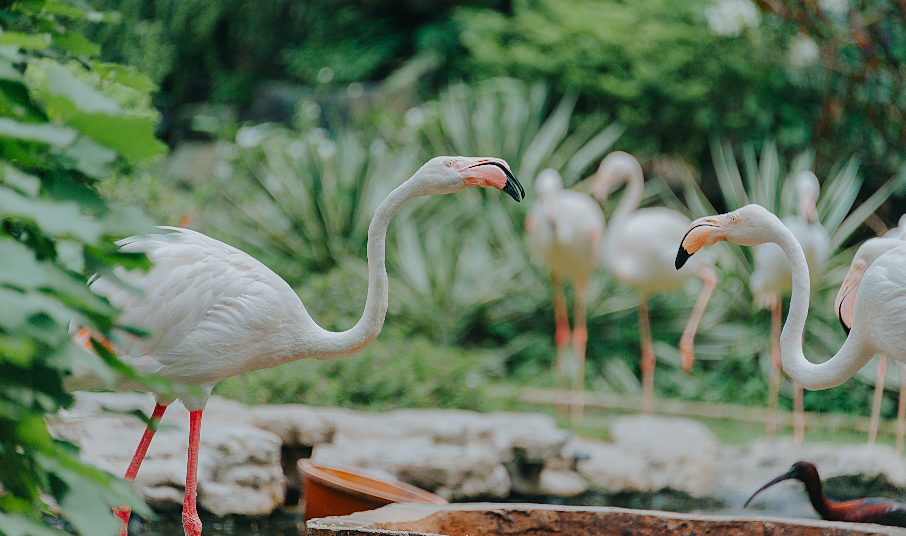
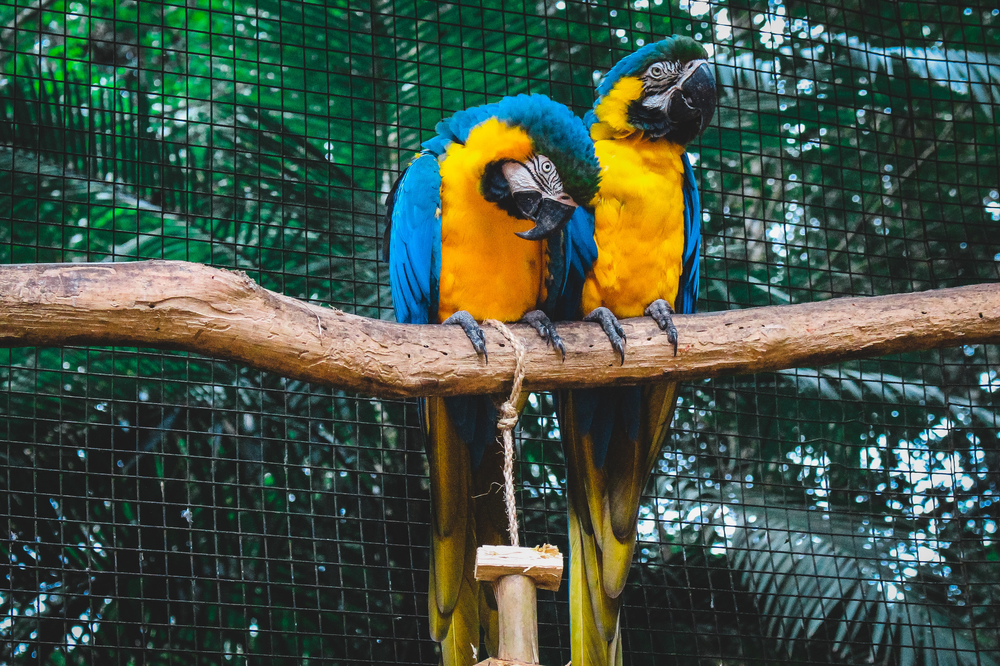

Reguli de vizitare
Grădina Zoologică Sibiu se întinde pe o suprafaţă de 15,1 ha, dintre care 5,5 ha sunt ocupate cu ţarcuri pentru animale şi voliere pentru păsări. Toate ţarcurile şi volierele sunt prevăzute cu bare şi garduri de protecţie pentru evitarea posibilelor accidente la venirea în contact cu animalele sau păsările care le ocupă. Totodată, sunt dotate cu plăcuţe conţinând informaţii despre animalele şi păsările care populează spaţiile respective, precum şi cu plăcuţe AVERTIZOARE care INTERZIC ACCESUL ÎNTR-O ZONĂ ŞI HRĂNIREA ANIMALELOR, drept pentru care vă informăm asupra SEMNIFICAŢIEI acestor plăcuţe :
1. NU DEPĂŞIŢI BARA DE PROTECŢIE – ANIMALE PERICULOASE:
Se interzice depăşirea barei de protecţie pentru a nu se ajunge în contact cu animalele, deoarece, într-un moment de neatenţie, ele vă pot răni prin gratii. De pildă odorizantul Dvs. le poate irita, făcându-le agresive, iar consecinţele pot fi foarte grave.
2. PENTRU ACCIDENTELE PRODUSE DIN CAUZA IGNORĂRII SAU NERESPECTĂRII ACESTOR REGULI DE VIZITARE SAU AVERTIZOARELOR AFIŞATE ÎN INCINTA GRĂDINII ZOOLOGICE NU NE ASUMĂM NICIO RĂSPUNDERE.
De asemenea conform HCL nr. 269/2008, următoarele fapte ale vizitatorilor sunt sancţionate astfel :a ) trecerea persoanelor peste bara de protecţie din dreptul ţarcurilor; b ) nerespectarea regulilor afişate privind comportamentul în timpul plimbării cu barca sau hidrobicicleta (4 persoane în barcă, 4 persoane în hidrobicicletă, poziţia şezut în timpul deplasării). c ) pătrunderea cu autoturismul în interiorul Grădinii Zoologice cu amendă de la 50 – 70 lei; d ) comportamentul necorespunzător în orice mod sau orice mijloc faţă de animale; e ) intrarea în Grădina Zoologică fără bilet sau prin alte locuri decât poarta de acces; f ) pescuitul fără achitarea taxei; g ) atitudinea necorespunzătoare faţă de ceilalţi vizitatori sau faţă de angajaţii Grădinii Zoologice şi aruncarea gunoaielor inclusiv a sticlelor de plastic în alte locuri decât cele special amenajate; h ) scăldatul pe timpul verii sau patinajul şi săniuşul ori deplasarea pe gheaţa lacurilor, în timpul iernii, cu amendă de la 100 – 200 lei; i ) distrugerea materialului de agrement (bărci, vâsle, hidrobiciclete), a materialului din spaţiul dendrofloricol şi acelui din zona verde, cu amendă de la 200 – 400 lei;
3. NU HRĂNIŢI ANIMALELE:
Animalele din Grădina Zoologică sunt hrănite conform raţiei alimentare sau furajere stabilite de FEDERAŢIA NAŢIONALĂ A GRĂDINILOR ZOOLOGICE ŞI ACVARIILOR PUBLICE DIN ROMÂNIA, al cărei membru suntem. Aceste raţii sunt echilibrate cantitativ şi calitativ, în funcţie de specia animalelor şi de starea lor fiziologică (gestaţie, lactaţie, reproducţie, vârstă etc.) astfel că orice hrană administrată suplimentar le afectează sănătatea. Dintre alimentele date animalelor de vizitatori, PUFULEŢII şi CIPSURILE sunt cele mai periculoase deoarece conţin cantităţi mari de sare iar pungile provenite de la aceste produse pot fi înghiţite, fapt ce duce, în numeroase cazuri, la pierderea animalelor . De asemenea, IARBA ŞI FRUNZELE luate din spaţiul verde şi oferite ca hrană, produc la animale boli parazitare. GÂNDIŢI-VĂ CE S-AR ÎNTÂMPLA DACĂ NU AM LUA ACESTE MĂSURI ŞI TOŢI VIZITATORII AR HRĂNI ANIMALELE CU HRANĂ NEPERMISĂ, DĂUNĂTOARE?Este posibil ca, în timpul vizitării Grădinii Zoologice, animalele să aibă momente când intră în spaţiul lor de odihnă ( padoc ) sau stau culcate în ţarc. În astfel de situaţii vă rugăm SĂ NU DERANJAŢI ANIMALELE, SĂ NU ARUNCAŢI CU PIETRE ÎN DIRECŢIA LOR PENTRU A LE FACE SĂ IASĂ DIN PADOC SAU SĂ SE RIDICE ! ŞI ANIMALELE AU NEVOIE DE ODIHNĂ ŞI INTIMITATE! Aveţi tot timpul să observaţi detaliile care vă interesează, deoarece biletul Dvs. de intrare este valabil pe întreaga durată a programului de vizitare. De aceea VĂ RUGĂM SĂ SOLICITAŢI BILET DE INTRARE ŞI APOI SĂ-L PĂSTRAŢI PÂNĂ LA PLECARE, PENTRU CONTROL.
